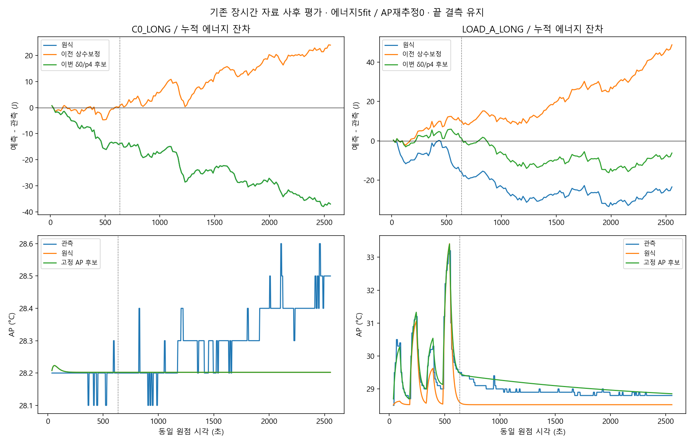
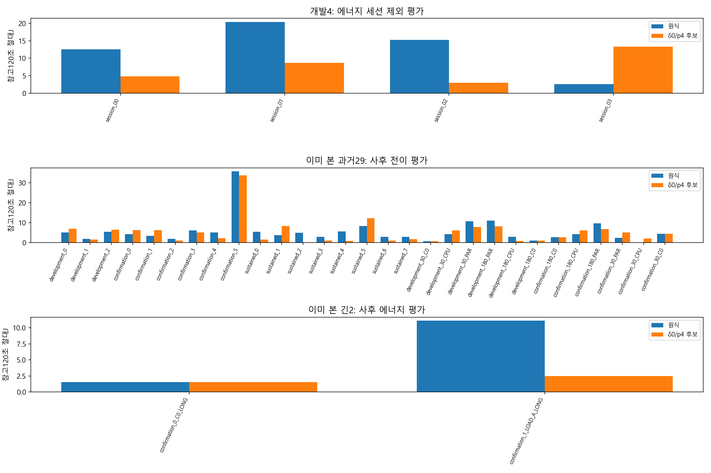
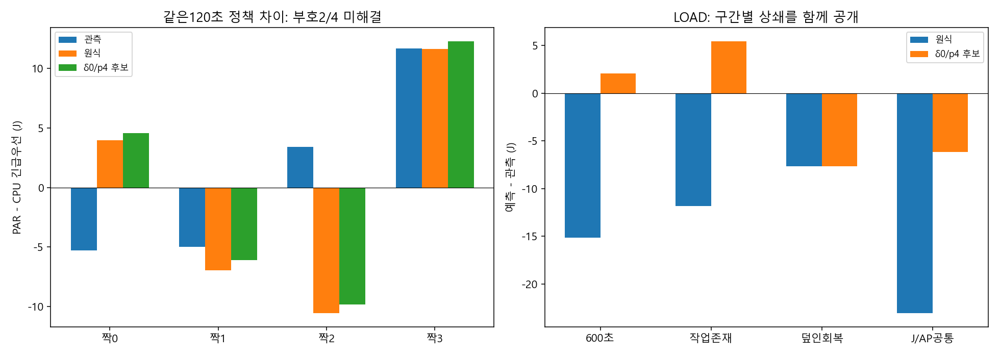

후속 토론·새 AP 실평가: LOAD 일부 추가개선과 과거 악화 — 전체교체는보류하여이페이지의주진단경로는유지합니다.
| 같은 LOAD 관측 구간 | 원식 → 이번 경로 | 남은 한계 |
|---|---|---|
| 37.4174–2554.5103초 에너지 차이 | −23.060 → −6.187J | 에너지 새 후보 사후 평가 |
| 같은 구간 AP MAE | 0.43731 → 0.17296°C | 기존 고정후보 재사용, 새 APfit0 |
| LOAD 등록600초 에너지 차이 | −15.151 → +2.081J | C0 −13.148J는 그대로 |
| 과거29 참고120초 평균 절대J | 5.522 → 5.144J | 10악화, 과거개발3 그룹은 악화 |
| 정책 차이 MAE | 6.322 → 6.219J | 부호2/4 오판 유지 |
실제 일정 조건부 에너지·AP를 함께 반환하는 opt-in API를 연결했습니다. 같은 모델·입력·4resident·등록macro·초기정보·프로토콜 맥락을 검사합니다. 기존 일반 도착/RL/strict는 그대로입니다. 저장된 예정일정17개에 대한 B 비용투영은 새 일정·응답 검증과 분리했습니다.
결과·정확한 창·사용 명령 · 전체 근거·재현 · 같은 창 표 · 모든 에너지 악화 · 상쇄 · 검증·hash



작은 전체 순오차와 국소 오차 감소는 다릅니다. 5초 bins의 LOAD 잔차 절대합은247.777→241.997J로 소폭 줄고 양의 오차는 증가했습니다. 후보를 기본 모형으로 자동 채택하지 않았으며 새 실측·계획·claim도 만들지 않았습니다.